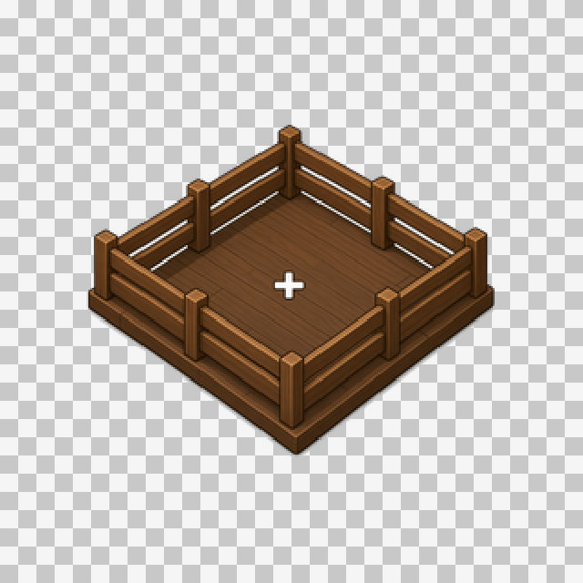
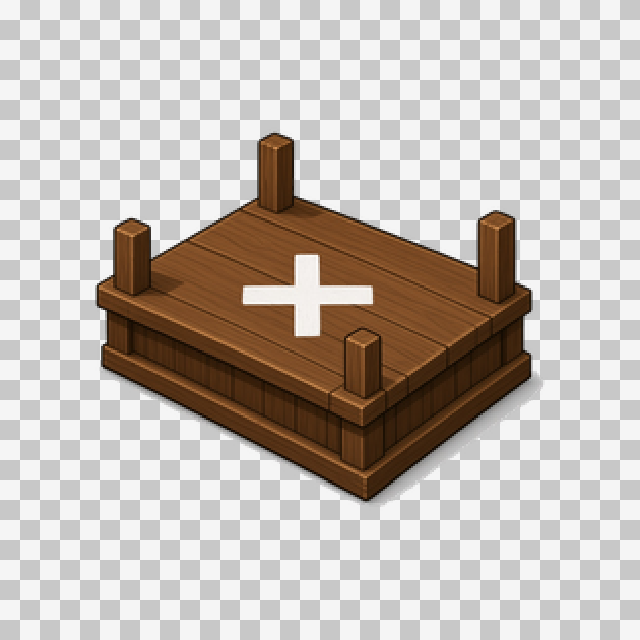
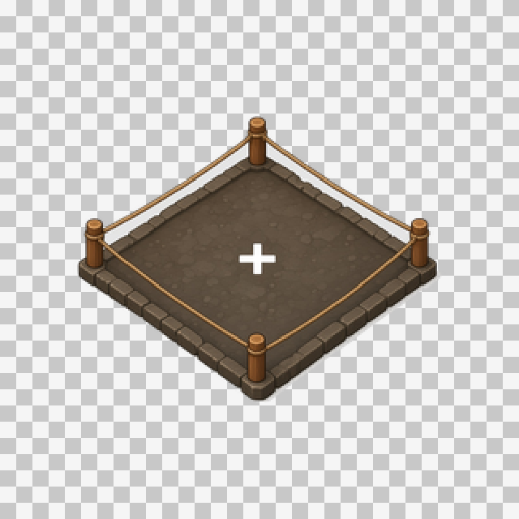
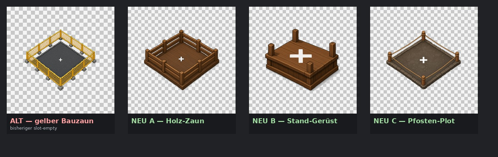
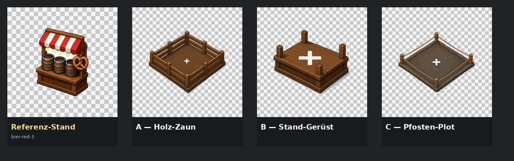

Vorschlag A
Holz-Zaun
Holzplanken-Zaun um leere Plattform mit + — Bauzaun, aber Stand-Holzlook.

Im gleichen Holz-/Toy-Look und derselben Isometrie wie die Stände. Gelber Bauzaun ist der Alt-Stand. Zurück zur UI-Einzel-Review.
Holzplanken-Zaun um leere Plattform mit + — Bauzaun, aber Stand-Holzlook.

Leeres Stand-Skelett (Basis + Eckpfosten, ohne Markise) mit +.

Vier Holzpfosten mit Seil um Stein-/Erdpad mit + — leichter Marker.


